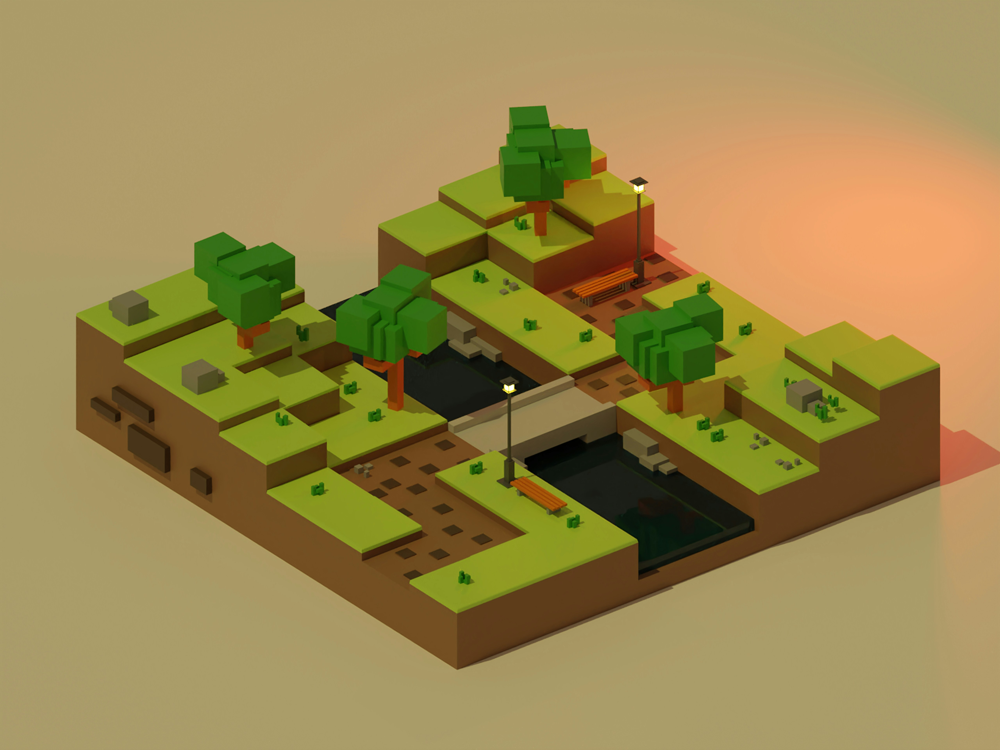

My First Survival Base

Every Minecraft world starts the same way, you spawn with nothing, the sun is already moving across the sky and you have about ten minutes before the zombies come out. For my newest survival world, I decided to skip the usual dirt hut and actually plan a proper base from day one.
I found a spot beside a river with some oak trees, which meant easy access to wood and water. Then, I laid out a park with paths, lanterns and benches, then built a stone bridge across the river so I could reach the forest on the other side without swimming. Lighting everything up with lanterns kept the mobs away, and now it's my favourite place to log off at the end of the game. Next, I want to add a farm and an underground storage room so that the base can keep growing.